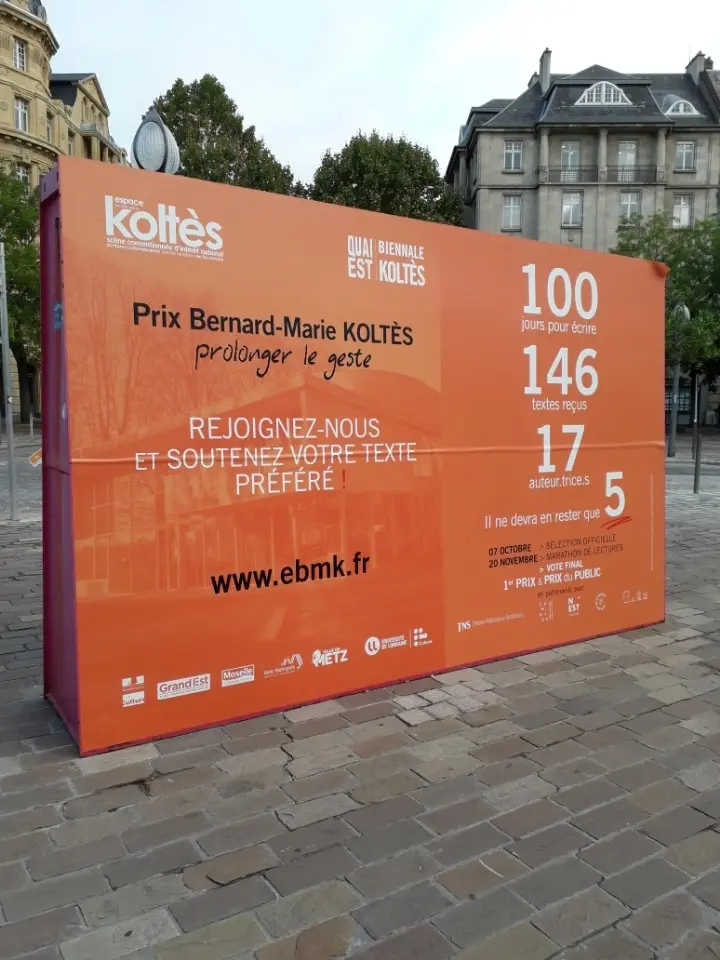

Prix Koltès
« Prolonger le geste » puis « Envie de futur » : un prix pour faire entendre les voix d’aujourd’hui. Appel à candidatures ouvert jusqu’au 31 janvier 2027.
« Prolonger le geste » : écrire en frères et sœurs de Koltès, ce n’est pas chercher la fidélité à l’œuvre, mais prolonger l’élan qu’elle a lancé dans le monde.
Créé en 2021 par l’association Quai Est et le théâtre universitaire Bernard-Marie Koltès de Metz, avec le soutien de François Koltès (président du jury), le Prix soutient de jeunes autrices et auteurs pour une écriture dramatique contemporaine et francophone. Après trois éditions sous forme de concours d’écriture (2021, 2023 et 2025), il change de formule en 2027 : il devient un dispositif d’accompagnement, avec des résidences d’écriture et un thème commun, « Envie de futur ».
À ne pas confondre avec le Prix des lycéens Bernard-Marie Koltès créé par le Théâtre national de Strasbourg en 2016.

Les éditions
Prix Koltès — « Envie de futur », une fabrique de l’avenir
Un appel de nouveaux récits aux jeunes autrices et auteurs : écrire des fictions qui donnent envie de rêver le futur, au-delà du constat, du témoignage ou du théâtre documentaire.
L’esprit
Le Prix est porté par le Théâtre Bernard-Marie Koltès et l’association Quai Est. Il s’inscrit dans le projet « Écrire les futurs » du théâtre et s’appuie sur la notion d’« utopie radicale » théorisée par Alice Carabédian : imaginer d’autres manières de faire société, sans mièvrerie, en dépassant la dystopie autoritaire comme le repli sur soi. Il offre du temps d’écriture et d’exploration plutôt qu’un concours sur texte achevé.
Qui peut candidater ?
- Avoir moins de 35 ans au moment du dépôt ;
- écrire en français ;
- n’avoir été édité·e qu’une seule fois au plus, et n’avoir pas plus d’une œuvre créée dans des conditions professionnelles ;
- respecter la thématique de l’édition ;
- ne pas avoir été finaliste d’une précédente édition du Prix.
Le dossier à envoyer
- un texte en cours d’écriture : au moins trois scènes, ou une première version d’une vingtaine de pages maximum ;
- une note d’intention ;
- un résumé de quelques lignes ;
- un CV.
Tous les documents sont anonymisés, sauf le CV, qui reste confidentiel jusqu’aux délibérations du jury. Envoi par courriel à koltes-prix@univ-lorraine.fr.
Les prix
- Prix du jury : au minimum deux résidences d’écriture rémunérées, l’une à la Kulturfabrik (Luxembourg), l’autre au Théâtre Koltès à Metz, avec une semaine de mise à l’épreuve du texte au plateau (un·e metteur·se en scène et trois interprètes).
- Prix du public : une bourse d’écriture de 2 000 € offerte par l’association Quai Est.
Les deux prix sont cumulables.
Comment se déroule la sélection ?
Après un contrôle de recevabilité, environ 40 dossiers sont retenus et analysés par un comité d’une dizaine de bénévoles de tous âges (dont une moitié d’étudiant·es), qui choisit une dizaine de finalistes. Un jury professionnel retient ensuite trois projets, présentés au public lors de la Biennale Koltès, du 12 au 27 novembre 2027 : les autrices et auteurs y présentent leur projet, le jury désigne la lauréate ou le lauréat et le public vote.
Calendrier
- 4 novembre 2026 : annonce de l’appel à candidatures
- 31 janvier 2027 : date limite de dépôt
- Février – juin 2027 : sélection des dossiers
- Fin juin 2027 : dix finalistes choisis par le comité de bénévoles
- Début septembre 2027 : trois finalistes choisis par le jury professionnel
- Novembre 2027 : lectures, présentation des projets et remise du prix
Contact : koltes-prix@univ-lorraine.fr · modalités complètes sur theatre-koltes.fr
2021 — 147 textes, quatre finalistes
Marathon de lectures les 19 et 20 novembre 2021. Prix du jury : Alexandre Horréard, Utopie\Viande. Prix du public ex æquo : Alexandre Horréard et Emmanuel Gavard (Les Endormis).
Détails de l’édition 2021 →
2023 — vers plus d’accompagnement
Cent jours pour écrire à partir d’une phrase imposée, avec trois jurys successifs (lecteurs, étudiants de l’Université de Lorraine, professionnels). Marathon de lectures les 24 et 25 novembre 2023, parrainé par Arnaud Maïsetti.
Détails de l’édition 2023 →2025 — quatre textes en finale
Le marathon de lectures s’est tenu à Metz les 21 et 22 novembre 2025, dans le cadre de la 7e Biennale. Les quatre textes ont été mis en voix par des artistes et directeurs de Centres dramatiques nationaux du Grand Est (Nancy, Reims, Thionville, Colmar). La remise des prix du jury et du public a eu lieu le samedi 22 novembre à 20 h.
- Jean-Marc Streicher (Saint-Uze) — Et vous ne ferez pas mon deuil : un clandestin endormi dans la cale d’un cargo force un équipage à choisir.
- Jérémy Duval (Metz) — Roches noires : un homme retourne dans son village natal restaurer une statue de la Vierge, objet de légendes.
- Daphné Biiga Nwanak (Strasbourg) — Vie de Properzia de Rossi : Florence, 1550, une femme veut devenir sculptrice.
- Béatrice Bienvenille (Marseille) — Une femme ordinaire : dans un parloir de prison, une femme écoute le récit d’un acte violent.
Noms des lauréats 2025 (Prix du jury et Prix du public) : à ajouter, l’information n’était pas disponible lors de la refonte.

Lauréats
| Édition | Prix du jury | Prix du public |
|---|---|---|
| 2021 | Alexandre Horréard — Utopie\Viande | Alexandre Horréard (Utopie\Viande) & Emmanuel Gavard (Les Endormis), ex æquo |
| 2023 | À compléter (voir page Prix 2023) | |
| 2025 | À compléter (finalistes ci-dessus) | |
| 2027 | Trois finalistes présentés en novembre 2027, lors de la Biennale #8 | |
Règlement & candidature
L’appel à candidatures de l’édition 2027 est ouvert depuis le 4 novembre 2026. Le règlement complet et l’appel sont à télécharger ci-dessous ; la date limite de dépôt est le 31 janvier 2027.
Les règlements des éditions précédentes restent consultables pour mémoire :
Contact : koltes-prix@univ-lorraine.fr. Suivez aussi la page Facebook du Prix et le site du Théâtre Bernard-Marie Koltès.
Envoyez votre dossier (texte, note d’intention, résumé, CV) par courriel à koltes-prix@univ-lorraine.fr avant le 31 janvier 2027.